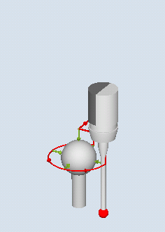

Function
With this measuring method the angularity of a spindle to the machine tool is measured on a calibration ball. The measurement is carried out by combining the measuring methods "sphere" (CYCLE997) and "outer circle segment" (CYCLE979).
Based on the measured values, the angular deviation of the spindle to the axis of the plane is calculated.
With the measured angular deviations, the spindle can be mechanically aligned parallel to the tool axis or the corresponding tables for sag compensation can be updated.
If there are rotary axes, the determined angular data can be used to align the rotary axis. To do this, the result parameter (_OVR) of CYCLE995 must be used.
Measuring principle
The 1st measurement of the calibration ball is performed with CYCLE997 and measurement is repeated. The starting angle can be freely selected. The incremental angle between the measuring points should be set to 90 degrees. From two measuring points along the circumference and one measuring point at the "north pole" of the sphere (highest point), the center point (position of the ball) is determined. In addition, the diameter of the calibration ball can be determined.
The 2nd measurement is performed with CYCLE979 at the shank of the probe at a distance of DZ. The starting angle and the incremental angle are taken from the 1st measurement. The measuring path and the safe area are also from the 1st measurement times a factor of 1.5. The center point of the probe shaft in the plane is determined.
For both measurements, the switching direction of the probe is corrected for each individual measurement.
The angular deviation in XY is calculated from the results of the two center points in XY and the distance between the two measurements in Z (for G17).
The tolerance parameter of the angular values is optionally checked (dimensional tolerance "yes").
Note:
The cycle CYCLE995 is based on the Renishaw AxiSet TM method based on the patent application, WO 2007068912 A1.
It is recommended to use the Renishaw probe with maximum accuracy for the application of the CYCLE995.
 Measure: Angular displacement of spindle (CYCLE995), 1st measurement |  Measure: Angular displacement of spindle (CYCLE995), 2nd measurement |
Requirements
The precision of the calibration ball should be better than 0.001 mm.
An electronic program is loaded into the spindle with the longest possible stylus tip (>100 mm).
The probe shaft should have a good surface quality (e.g. ground steel shaft).
Starting position before the measurement
Before the cycle is called, the probe must be positioned at the distance of the measuring path (DFA) above the mounted calibration ball (North Pole) so that this can be approached without any collisions at the circumference (equator).
Position after the end of the measuring cycle
The probe is located after the measuring cycle at the start position. In the probe direction (for G17 Z), the probe is at the distance of the measuring path (DFA) above the north pole.